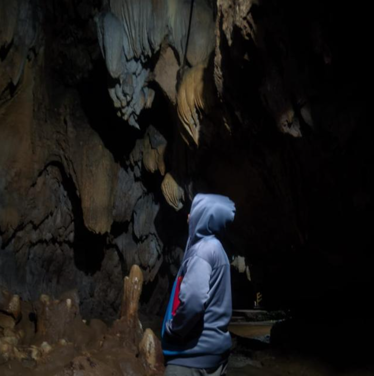

Tentang Saya
Saya adalah seorang pelajar yang sedang mempelajari ilmu IT dan bahasa inggris selain tahfidz dan ilmu agama dan bahasa arab.
Skill Unggulan
- Canva
- Figma
- Lightroom
Riwayat pendididkan
| Jenjang | Nama sekolah | Tahun |
|---|---|---|
| SMA | SMA IT HSI BOARDING SCHOOL | 2025-sekarang |
| SMP | MA'HAD TAHFIDZ IDN PURWOREJO | 2024 |